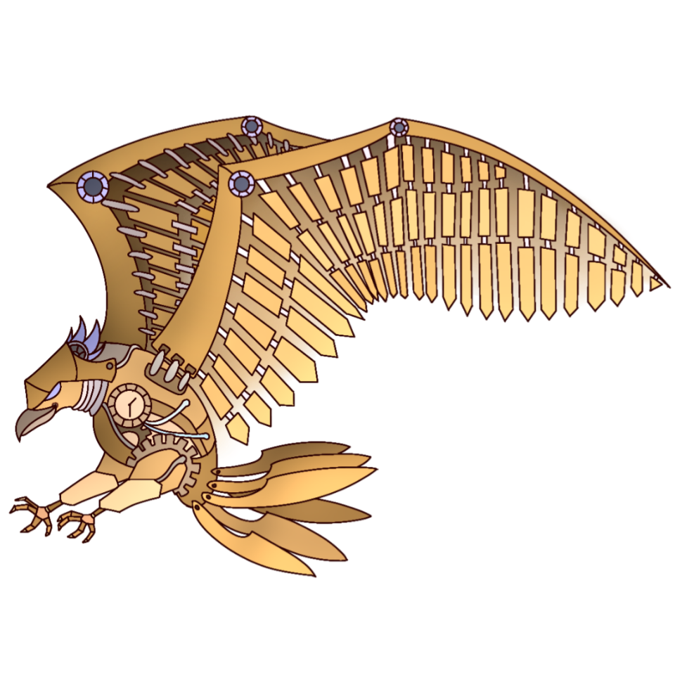

Who are we?
The Foothill High School Robotics Program consists of two FIRST® (For Inspiration and Recognition of Science and Technology) teams that have competed in the FIRST® Tech Challenge (FTC®) since 2018 and the FIRST® Robotics Competition (FRC®) since 2023. Our FTC® team (15884) is called "Falcon Dynamics" and our FRC® team (9002) is called "RoboFalcons". We are an after-school program based in Henderson, Nevada and we have 3 team mascots, a cow named Ezekiel, a falcon named Fredrick, and a robotic falcon named Athena.
About FIRST®
FIRST® is a non-profit organization dedicated to advancing STEM Education in the world. FIRST® reached over 500,000 students in 98 different countries in 2022 and those numbers grow every year. If you're interested in learning more about FIRST®, check out their website here. FIRST® not only emphasizes STEM in their programs but also emphasizes their Ethos including Gracious Professionalism® and Coopertition®. Learn more about Gracious Professinalism® on our Outreach page.